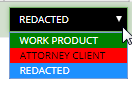
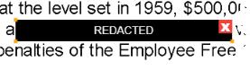
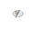
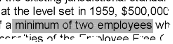
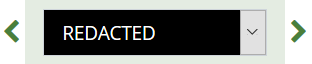

Apply Redactions
Redactions obscure the content of image files so that only appropriate
information is visible in the files you prepare for discovery. In , up to 99 redaction categories—with different colors and labels
for each—may be used. Redactions are viewed in as solid (if user has appropriate permissions).
Redact Image Content
If you have sufficient permissions, redact information
in an image as follows:
-
For
a selected document, in the Review
pane’s Image tab, locate the information
to be redacted.
-
Click  next to the Redaction button
and select the required redaction from the Redaction Category menu,
as shown in the following figure. The Redaction type and Redaction tool selection then persists when navigating to next or previous documents and pages.
next to the Redaction button
and select the required redaction from the Redaction Category menu,
as shown in the following figure. The Redaction type and Redaction tool selection then persists when navigating to next or previous documents and pages.

-
If required, click the button again to activate
the redaction action.
-
Point, click, and drag across the text or image area that is
to be redacted.
-
When you have completed the selection, release the
mouse button. An example of redacted text is shown here:

-
When you have finished, click  or another button to stop the redaction activity.
or another button to stop the redaction activity.
Redact Entire Page
It is possible to redact an entire page.
-
In the Review
pane’s Image tab, locate the page
to be redacted.
-
Click Redact Entire Page to apply redaction to the page.
-
When finished, click
or another button to stop the redaction activity.
Show Text Behind Redactions
For any or all redactions in the image, the text may be exposed by clicking

located to the right of the Redaction drop-down menu. When this icon is clicked, it changes to . Click again to hide the text. An example of exposed text behind a redaction is shown here:

The selected Redaction view setting (show/hide) then persists when navigating to next or previous documents and pages.
Resize a Redaction
If you have sufficient permissions, change the size
of a redaction as follows:
-
For
a selected document, in the Review
pane’s Image tab, locate a redaction
to be resized.
-
Click the redaction to select it, then drag
an edge or a corner to resize it.
Move a Redaction
If you have sufficient permissions, move a redaction
as follows:
-
For
a selected document, in the Review
pane’s Image tab, locate a
redaction to be moved.
-
Place the mouse pointer in the center of the
redaction and drag it to the required location, then release the mouse button.
Delete a Redaction
|

|
Note: No warning message
or Undo function exists when deleting redactions. Make sure of
the selection before deleting.
|
If you have sufficient permissions, delete redactions
as follows:
-
For
a selected document, in the Review
pane’s Image tab, locate a redaction
to be deleted.
-
Click the redaction. The selected redaction is then outlined in orange. Click in the upper right corner to delete the redaction.
-
When you are finished, click
or another button to stop the redaction activity.
|

|
Tip: Once a redaction is selected, you can also use the backspace key to delete it.
|
Navigate Redactions
If you have sufficient permissions, you can use the Redaction navigation buttons to quickly locate and navigate to redactions applied in the selected document. The Redaction navigation buttons allow you to move back and forth between individual redactions and pages with at least one redaction.
|
|
Note: If you have read-only permissions, you can use the redaction navigation buttons to navigate between pages with redactions, but not individual redactions.
|
There are two navigational buttons to choose from: previous and next.

When using the Redaction navigation buttons to move between redactions, the selected redaction are then outlined in orange.
|
|
Note: Redaction navigation does not distinguish between redaction types; when using the Redaction navigation buttons, the Redaction Category selected from the Redaction drop-down menu is irrelevant.
|
Redaction navigation aligns with a left-to-right reading direction, and is ordered by top-left positioning; the redaction applied first, located highest, and positioned in the most left corner is selected and outlined first.
-
If you select an individual redaction in the document and then use the Redaction navigation buttons, Redaction navigation then starts from the selected redaction on the page currently viewed. If you undo your selection of the individual redaction, Redaction navigation then proceeds from the page currently viewed.
-
If you change pages in the document by using the coding form/tag palette navigation toolbar, redaction navigation then proceeds from the page currently viewed.
The following scenarios apply only if you have not selected an individual redaction:
-
When viewing the first page of the document or the first page with at least one redaction, the previous button is disabled. Clicking the next button selects the first redaction in the document. This may or may not be located on the page currently viewed.
-
When viewing the last page of the document or the last page with at least one redaction, the next button is disabled. Clicking the previous button selects a redaction located previously. This may or may not be located on the page currently viewed.
The following scenarios apply if you have selected an individual redaction:
- When selecting the first redaction in the document, the previous button is disabled.
- When selecting the last redaction in the document, the next button is disabled.
-
When selecting an individual redaction on a page that has multiple redactions, the previous or next buttons then navigate to the previous or next redactions on that page, before navigating to the previous or next page(s) that contain redactions.
|
|
Note: If you delete the redaction that is selected, the next available redaction will be selected.
|
Related Topics
Conduct Review
Permissions List
Overview: Document Viewer